Mixto
Clube atual
14 jogos · 1 gols
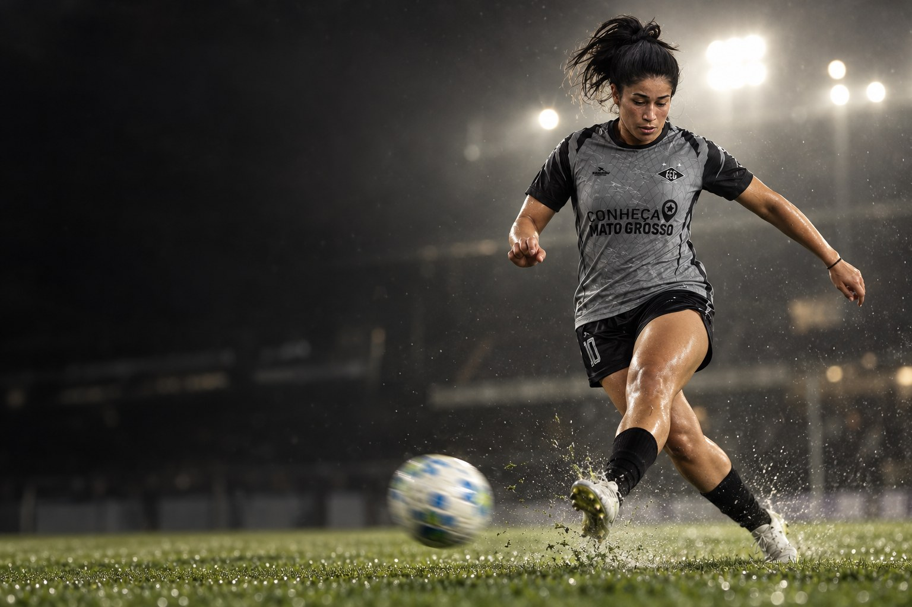
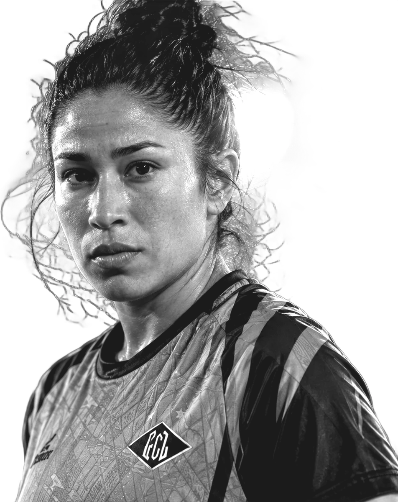
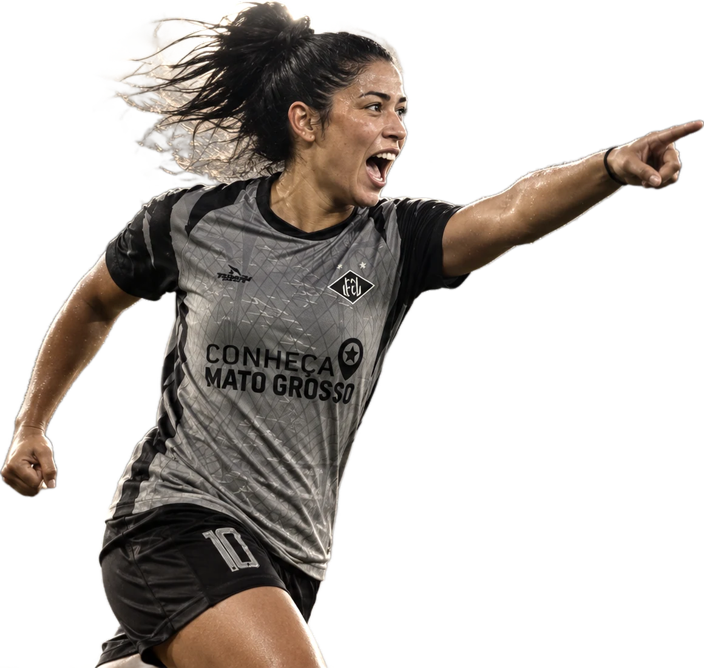
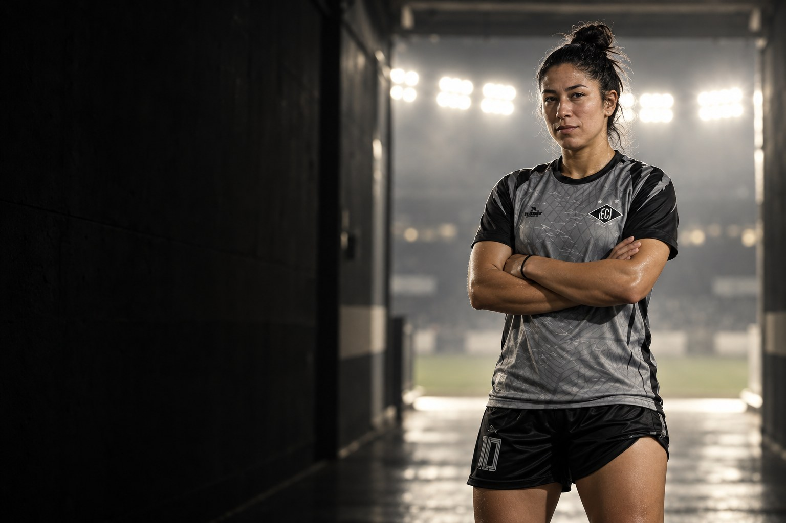
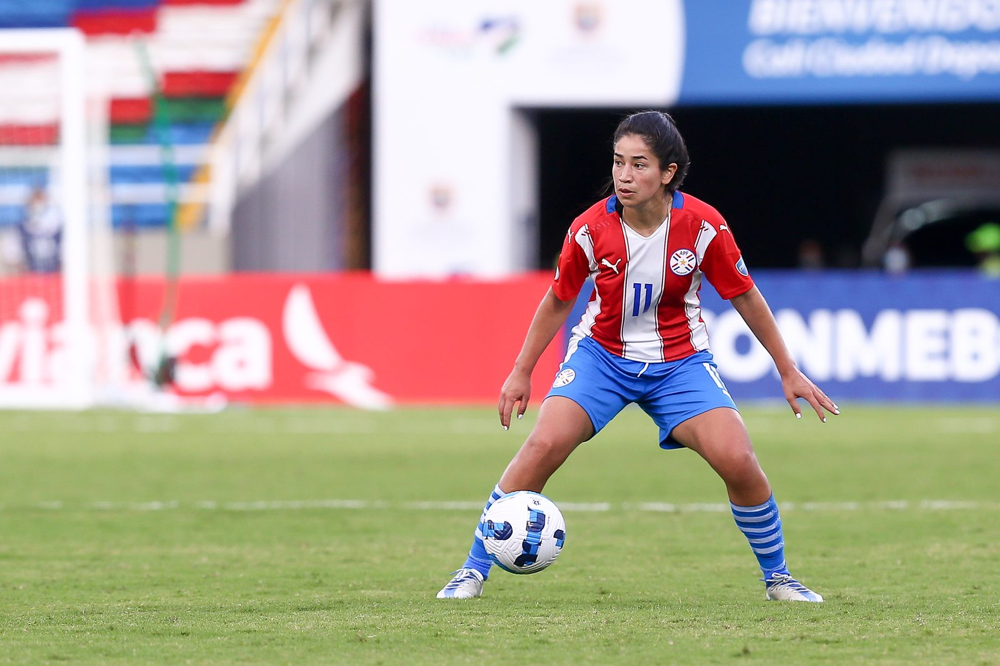
Sobre
Fany Mabel Gauto Caballero é futebolista profissional e atua como meia ofensivo e ponta direita. Clube atual: Mixto. Seleção: Paraguai.
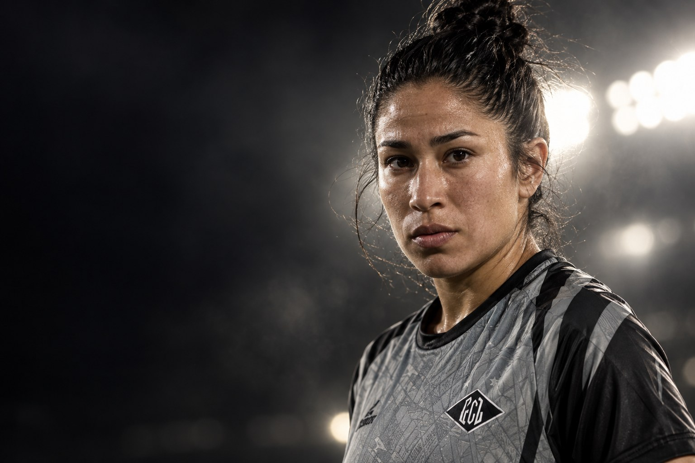
Perfil
Carreira em números
Números
Carreira
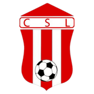
2017Sportivo Limpeño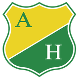
2018Atlético Huila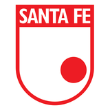
2020Santa FeClubes em destaque
14 jogos · 1 gols
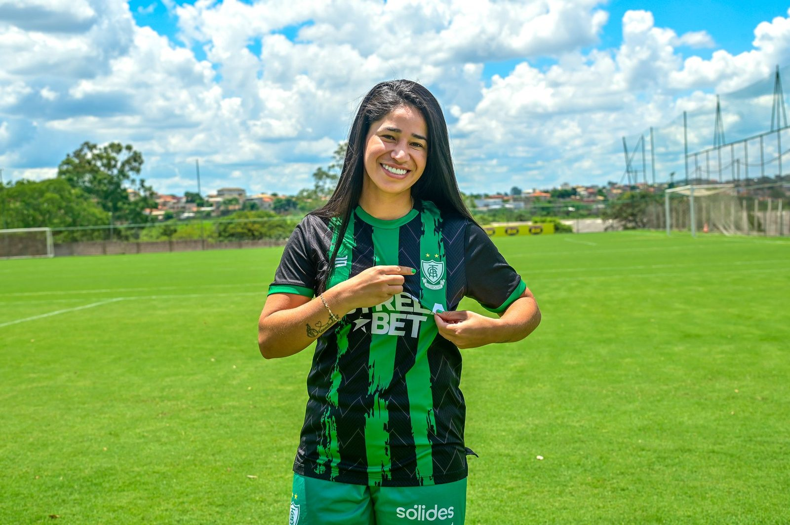

18 jogos · 1 gols
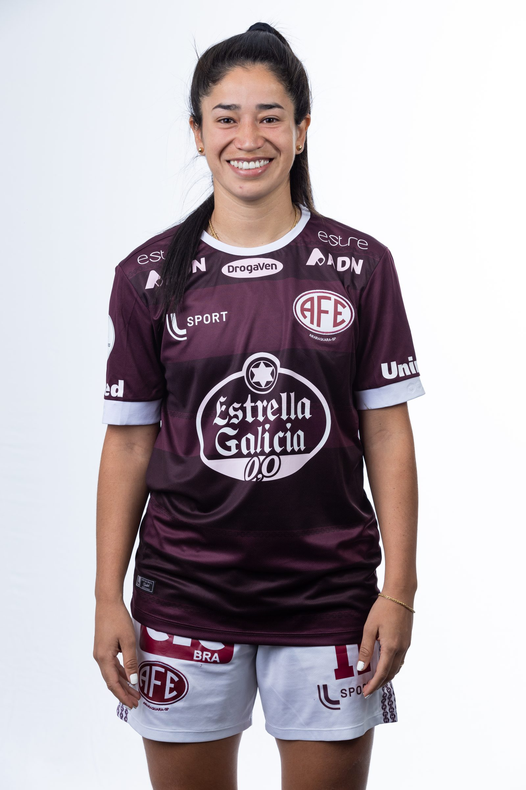

21 jogos · 2 gols
Conquistas
Galeria
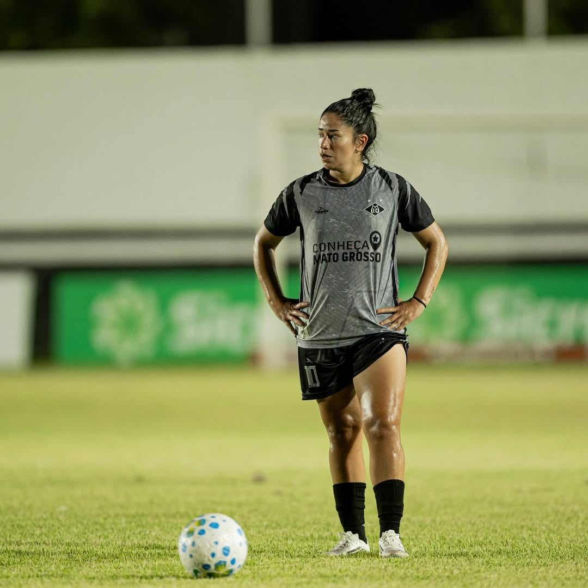
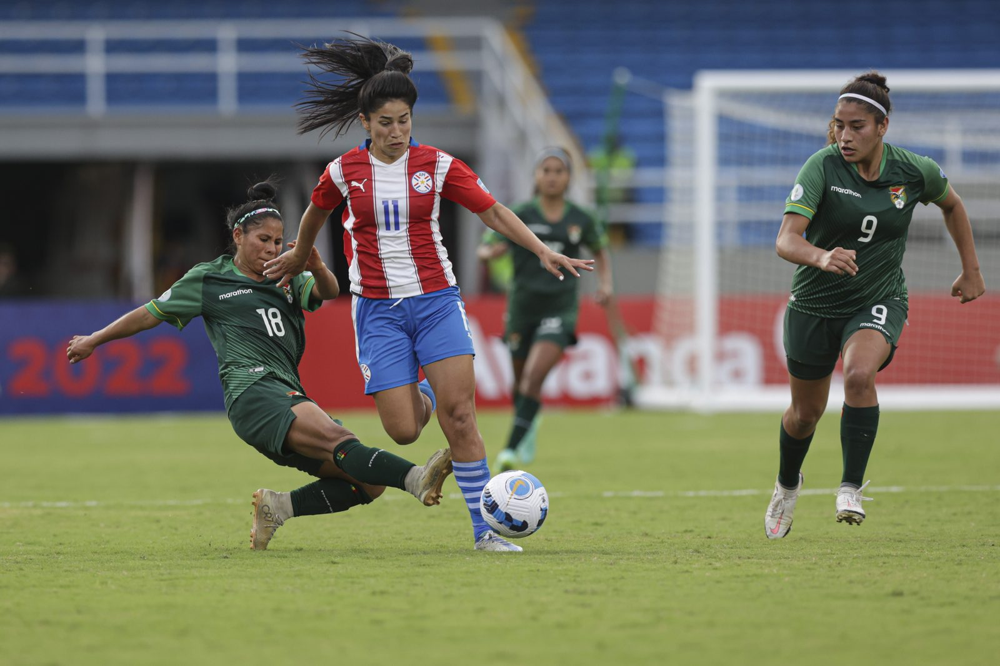
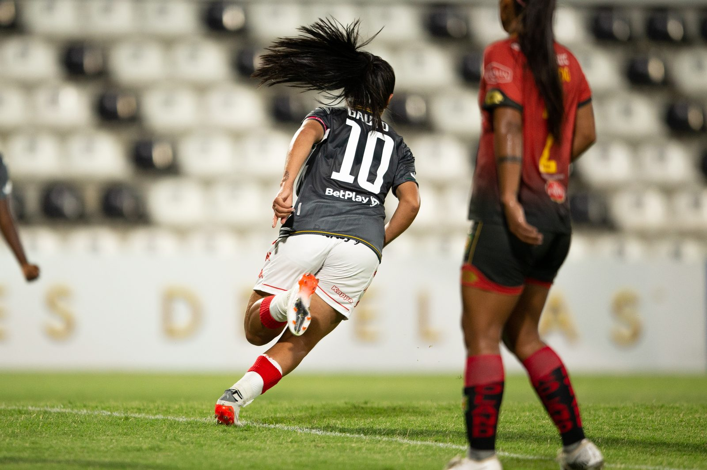
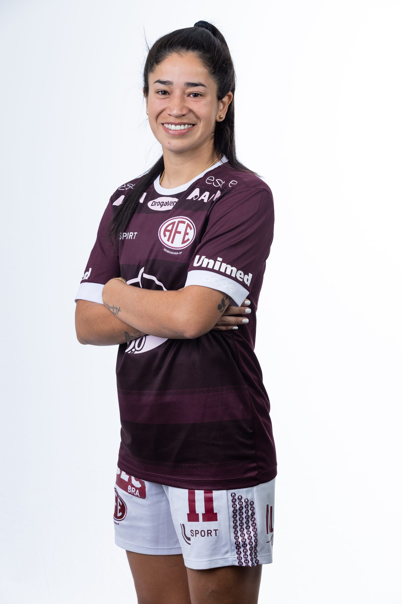
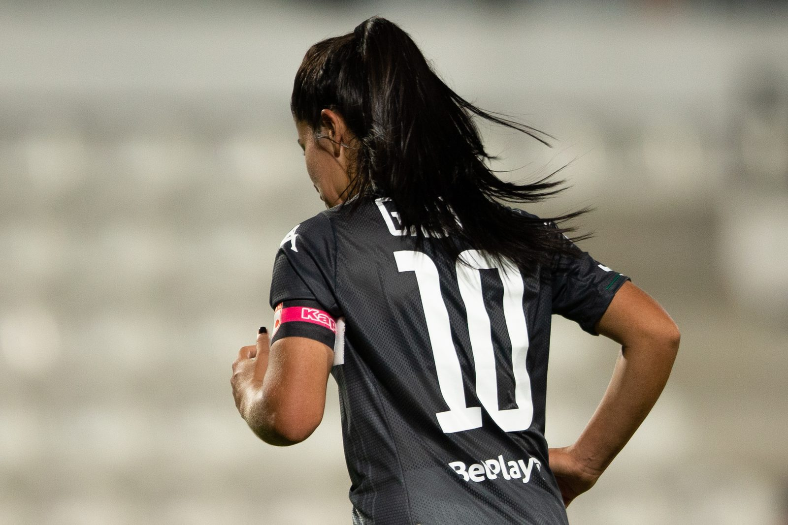
Currículo esportivo
| Temporada | Clube | País | Jogos | Gols | Assistências |
|---|---|---|---|---|---|
| 2026 | Mixto | 14 | 1 | 0 | |
| 2024 | 18 | 1 | 0 | ||
| 2023 | 17 | 1 | 0 | ||
| 2022 | 21 | 2 | 2 | ||
| 2021 | Santa Fe | Colômbia | 6 | 2 | 0 |
| 2020 | Santa Fe | Colômbia | 4 | 1 | 0 |
| 2019 | Atlético Huila | Colômbia | 5 | 0 | 0 |
| 2018 | Atlético Huila | Colômbia | – | – | – |
| 2018 | Cúcuta Deportivo | Colômbia | – | – | – |
| 2017 | Sportivo Limpeño | Paraguai | 3 | 1 | 0 |
| 2017 | Cúcuta Deportivo | Colômbia | – | – | – |
| 2015/16 | Maccabi Holon | Israel | – | – | – |
| 2015/16 | Sportivo Limpeño | Paraguai | – | – | – |
| 2015 | Paraguai | – | – | – | |
| 2014 | Paraguai | – | – | – | |
| 2013 | Paraguai | – | – | – | |
| 2012 | Paraguai | – | – | – | |
| 2012 | Olimpia | Paraguai | – | – | – |
| 2012 | Univ. Autónoma | Paraguai | – | – | – |
| 2011 | Olimpia | Paraguai | – | – | – |
| 2011 | Maccabi Holon | Israel | – | – | – |
| 2010 | Olimpia | Paraguai | – | – | – |
Jogos, gols e assistências conforme a base estatística Ogol. O clube atual segue o anúncio oficial do clube.
Na mídia
Contato profissional
Assuntos profissionais, comerciais e de carreira: fale com a X Soccer, que faz a gestão da carreira da atleta.
Mídia kit
International profile